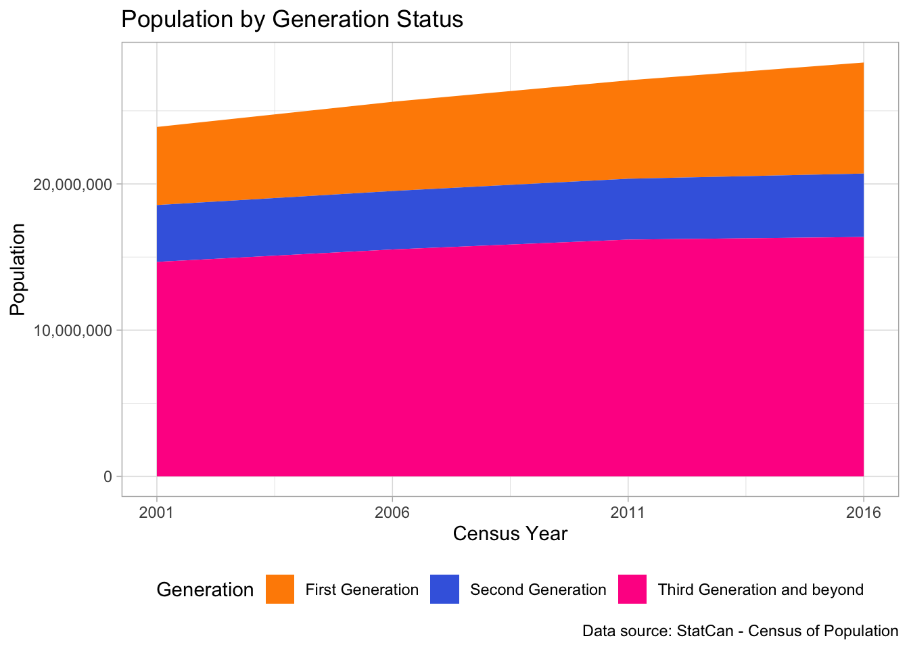
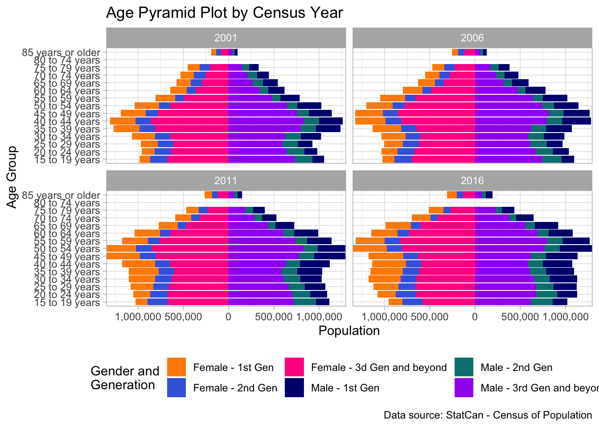
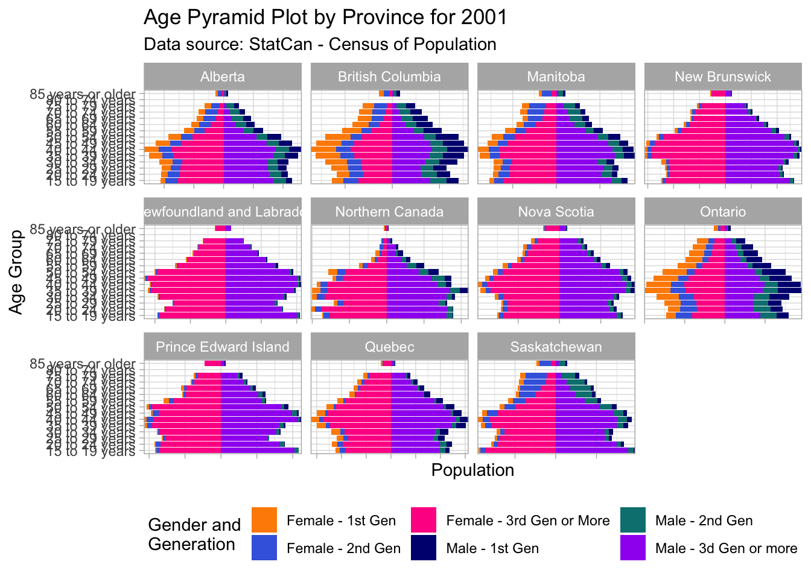
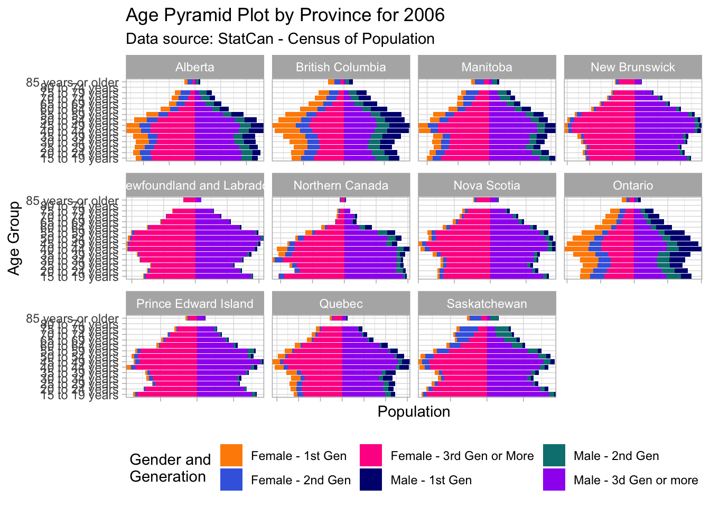
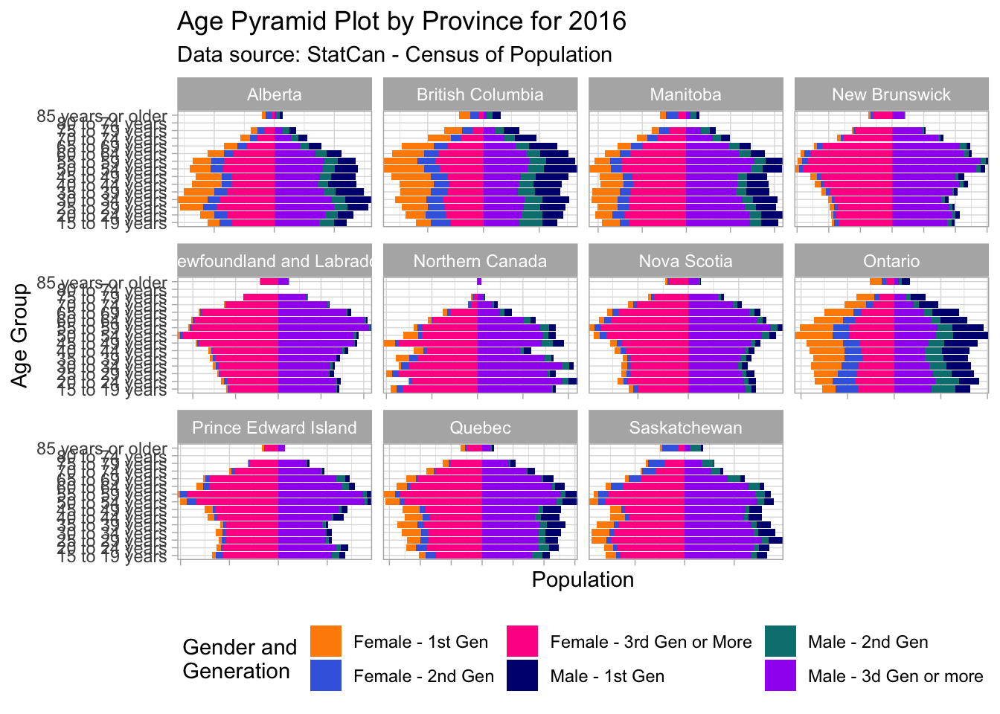
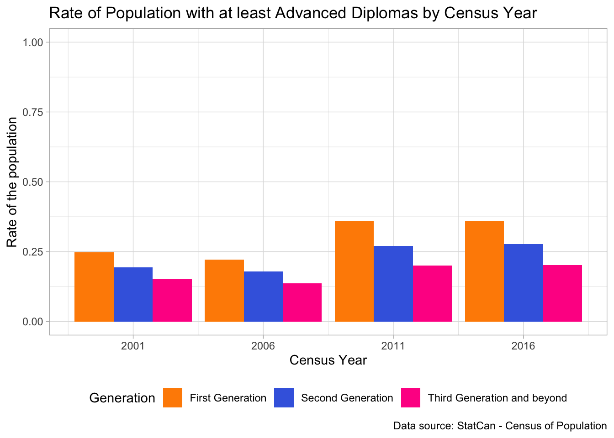
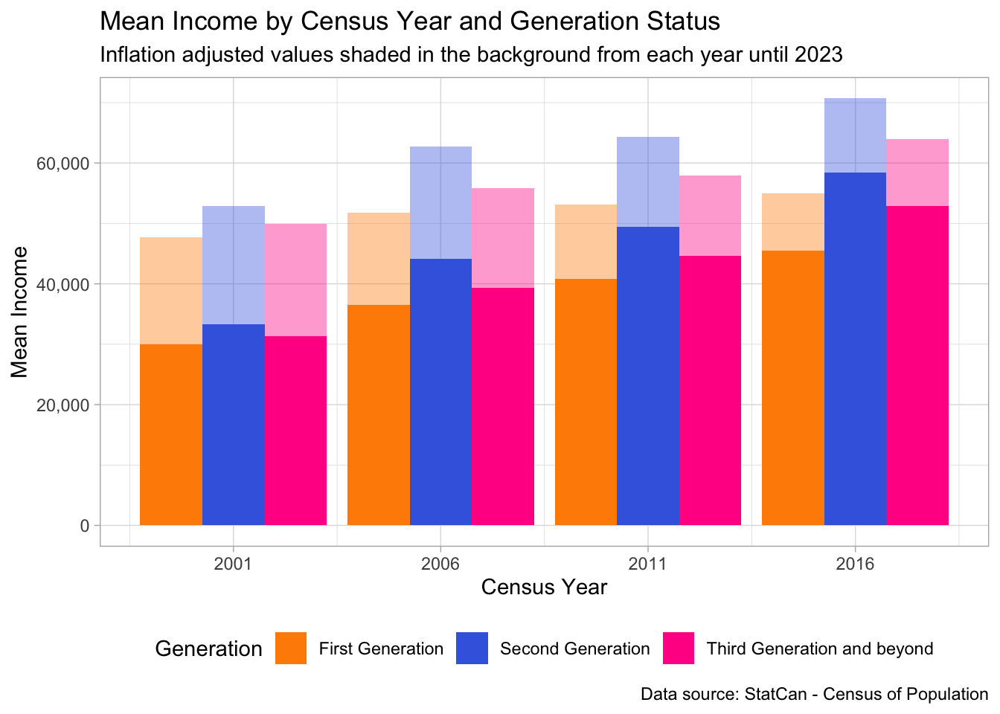

The evolution of immigrant characteristics in Canada
Analyzing Census of Population data to assess the immigrant’s profile changes
Introduction
Throughout time, Canada has proven itself to be a receptive and supportive country of immigration, having its first immigration policies dating back to 1869, with the First Immigration Act. However, neither the immigration process stayed the same throughout the years, nor the population of immigrants that decide to choose Canada as their destination, and so, to accommodate this evolutionary process, changes were made to keep Canada as an attractive destination for immigrants from all over the world.
To try to better understand the evolution of the immigrant profiles, data released by Statistics Canada were used, more specifically, the Census of the Population. To perform this analysis, the Public Use Microdata File (PUMF) for the years 2001, 2006, 2011 and 2016 was used.
To account for differences in the release of the Census files through the years, it was kept only data for the population of 15 years and beyond, since in 2001 and 2006 there is no information about children under 15 years old.
Before diving into the analysis itself, it is necessary to establish a couple of concepts that will be used from now on. One of the more important ones is related to the generational status of Canadian residents interviewed by the Census. In this we can break down the available statuses into three main groups:
- First Generation: People born in countries other than Canada;
- Second Generation: People born in Canada with at least one parent born in countries other than Canada;
- and Third Generation and beyond: People with both parents born in Canada;
These three characteristics of the population will be the stepping stone to the development of the following analysis since they grant us the possibility of understanding how the characteristics of immigrants evolve with time but also grant us an understanding of how the families that immigrants choose to create in Canada help shape the ever-changing Canadian demographic landscape.
The present essay starts by analyzing in raw numbers how the Canadian population evolved from 2001 until 2016, by splitting the population between the generational and immigration statuses stated before. As can be seen in Figure 1, the Canadian population has grown steadily since 2001, especially between 2001 and 2011, when growth stumbled and was majorly driven by the increase of the First Generation migrants’ share of the population.

Nonetheless, the raw data does not give a clear insight into how the decrease of the Third Generation was superseded by an increase of the First Generation migrants in Canada. This can be better understood in Figure 2, where the clear decrease in the share of the population that belongs to the Third Generation or beyond was accompanied by an almost equal growth of the share of the population taken by the First Generation.
Demographic Impact
As can be seen more prominently in most recent years, immigration in Canada has been a vector for population renewal to the Canadian demographic scenario, with the Second Generation Canadians continuing with steady numbers throughout the years, and Third Generation Canadians declining. The distribution of ages of the people that decide to immigrate is not equally distributed, however, since many immigrants decide upon moving to another country after they reach a certain age.
One interesting way to analyze this data is by creating a measure between the shares of people born in countries other than Canada, and people born in Canada. We can define this measure in Equation 1, with \(i\) representing the age group that each person belong, \(t\) representing the Census Year, \(BornCanada\) is the count of population that was born in Canada, and \(BornAbroad\) representing the First Generation migrants, people that were born abroad.
By clarifying what defines the differences in the share of population, we can visualize in Figure 3 how different age groups have different proportions of people born abroad, and how it evolved during the years, with most of the groups showing an increase in the share of population that is composed by First Generation migrants.
Even so, we can move further in the analysis, trying to encompass the differences between the earliest and latest data that we have, 2001 and 2016 respectively. In Figure 4 we can see that throughout the years there was an increase in the proportion of the population occupied by First Generation migrants, especially between the ages of 25 and 49 years old.
It is to be seen whether these First Generation migrants to Canada will decide on staying in the country, or going back to their countries of birth after they reach a certain age, if the earlier comes true, we should expect an increase in the number of residents in Canada with the ages of 70 years and more, that were born in other countries.
Another interesting analysis that can be done on this data is related to the evolution of the Canadian age pyramid. Since the Third Generation and Beyond is decreasing in Canada, and the Second Generation is kept at a steady level, it is expected a movement toward the aging of the population. This phenomenon, however, is overridden by the increase of First Generation residents, keeping the economically active population growing as can be seen in Figure 5.

These changes in the Canadian demographic profile are impressive when analyzed at the country level, and they become even more impressive when we dive into provincial data, as we start seeing patterns of evolution for provinces that were historically more sought after by immigrants. By checking Figure 6, Figure 7, Figure 8 and Figure 9 in the plots below, we can see how large provinces such as Ontario, British Columbia, Alberta, and Manitoba can account for a large part of their growth to First Generation migrants, meanwhile, provinces like New Brunswick, Newfoundland and Labrador, Nova Scotia, and Prince Edward Island started showing patterns of population aging.



Immigrant profile changes
Until this point, we have been assessing the importance of immigration to Canada’s growth in terms of population, and it is undeniable that immigration played a significant role in other fields where Canada thrived. Having said that, not only the characteristics of Canada changed with time, but the characteristics of the migrants changed as well. To perform this assessment, I’ve chosen two points of view to evaluate the evolution of immigrants in Canada: Education and Income.
Education
The transformations in the education levels of First Generation migrants move toward the increase of opportunities for highly skilled workers, most of them out-pacing their Canadian counterparts, by immigrating with higher levels of education, on average, when compared to their Canadian counterparts.
To assess the educational level of the population I chose to create an indicator of whether the highest education achieved by an individual was at least the equivalent of an Advanced Diploma (three years of a Bachelor’s Degree).
Figure 10 shows clearly that there was a general movement in search of higher specializations by the general population, however, the rate of First Generation immigrants that arrive in Canada with post-secondary education has always been greater than the rate of the population with higher education for the other two generational statuses.

Income
On the other hand, even with a larger account of the population arriving with higher educational levels than their Canadian counterparts, this is not reflected in the annual income that First Generation migrants receive.
Figure 11 allows us to take a glimpse at two interesting takes regarding income for the Canadian population. The first insight that is taken is the general growth of the income from 2001 to 2016, showing that even when we account for the inflation of the period, there is still a rise in the annual income for the entire population. The second insight that comes to mind is the fact that people that belong to the Second Generation status were always able to surpass the mean income that is received by both First Generation and Third Generation and beyond.
For income the values were kept between 1,000 CAD and 2,000,000 CAD

With all that being said, wages and income are generally a more sensitive topic that requires a more in-depth analysis of what might be the causes that create these discrepancies in income, as well as creating further comparisons using a more comprehensive set of variables that will be able to explain more accurately how this groups truly differ between themselves.
Final Remarks
By no means a short essay will be able to capture all of the nuances and intricacies that surround a complex immigration system and the economic and demographic scenarios of a country as big as Canada. However, by analyzing data released by Statistics Canada, this aims to shed a light on the important role that immigration plays in Canada, by being a vector for population renewal, a constant source of talent, and a milestone for diversity and inclusion for everybody that seeks shelter in the Great White North 🇨🇦.